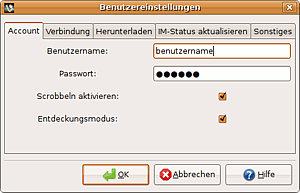
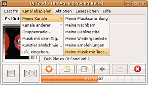
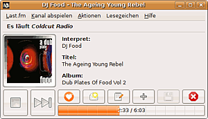

Vagalume
Dieser Artikel wurde für die folgenden Ubuntu-Versionen getestet:
Ubuntu 16.04 Xenial Xerus
Ubuntu 14.04 Trusty Tahr
Zum Verständnis dieses Artikels sind folgende Seiten hilfreich:
Vagalume  (bedeutet "Leuchtkäfer") ist eine auf GTK basierende Anwendung für libre.fm , die auf kleinem Raum neben der reinen Musik-Wiedergabe eine Vielzahl von Möglichkeiten zur Nutzung von libre.fm bietet. Ursprunglich war der Player zum Abspielen und Bedienen von last.fm konzipiert worden, nicht alle Einstellungen sind auch für libre.fm nutzbar. Der Player ist auch in einer Version für die Nutzung mit Nokia Internet Tablets (z.B. 770, 800, 810) erhältlich. Die Software steht unter GPL-Lizenz .
(bedeutet "Leuchtkäfer") ist eine auf GTK basierende Anwendung für libre.fm , die auf kleinem Raum neben der reinen Musik-Wiedergabe eine Vielzahl von Möglichkeiten zur Nutzung von libre.fm bietet. Ursprunglich war der Player zum Abspielen und Bedienen von last.fm konzipiert worden, nicht alle Einstellungen sind auch für libre.fm nutzbar. Der Player ist auch in einer Version für die Nutzung mit Nokia Internet Tablets (z.B. 770, 800, 810) erhältlich. Die Software steht unter GPL-Lizenz .
Hinweis:
Am 28. April 2014 stellte Last.fm seinen Radiodienst komplett ein, das Programm ist damit für Last.fm obsolet, kann aber für libre.fm weiter verwendet werden. Dafür ist allerdings unter Precise eine Neukompilierung aus dem Quellcode  mit der aktuellen Version 0.8.6 nötig.
mit der aktuellen Version 0.8.6 nötig.
Installation¶
Vagalume ist in den offiziellen Paketquellen vorhanden; das Paket
vagalume (multiverse [1])
 mit apturl
mit apturl
Paketliste zum Kopieren:
sudo apt-get install vagalume
sudo aptitude install vagalume
ist zu installieren[2].
Außerdem müssen (auch bei KDE-Nutzung) eventuell die folgende Pakete installiert werden:
gstreamer0.10-alsa
gstreamer0.10-esd
gstreamer0.10-ffmpeg (nur bis Ubuntu 13.10)
gstreamer0.10-gnomevfs
gstreamer0.10-plugins-base
gstreamer0.10-plugins-base-apps
gstreamer0.10-plugins-bad
gstreamer0.10-plugins-bad-multiverse
gstreamer0.10-plugins-good
gstreamer0.10-plugins-ugly
mit apturl
Paketliste zum Kopieren:
sudo apt-get install gstreamer0.10-alsa gstreamer0.10-esd gstreamer0.10-ffmpeg gstreamer0.10-gnomevfs gstreamer0.10-plugins-base gstreamer0.10-plugins-base-apps gstreamer0.10-plugins-bad gstreamer0.10-plugins-bad-multiverse gstreamer0.10-plugins-good gstreamer0.10-plugins-ugly
sudo aptitude install gstreamer0.10-alsa gstreamer0.10-esd gstreamer0.10-ffmpeg gstreamer0.10-gnomevfs gstreamer0.10-plugins-base gstreamer0.10-plugins-base-apps gstreamer0.10-plugins-bad gstreamer0.10-plugins-bad-multiverse gstreamer0.10-plugins-good gstreamer0.10-plugins-ugly
Probleme können ggf. die Pakete
gstreamer0.10-fluendo-mp3
gstreamer0.10-fluendo-mpegdemux
bereiten. Sie sollten entfernt werden, insbesondere wenn Vagalume sich nicht starten lässt und nur die Fehlermeldung "Fehler beim Initialisieren des Audiosystems" und im Terminal u.a.
** (vagalume:xxxx): CRITICAL **: Error creating GStreamer elements
liefert.
Nach erfolgreicher Installation findet sich das Programm beispielsweise im Gnome-Menü unter:
"Anwendungen -> Unterhaltungsmedien -> Vagalume Last.fm Client"[6];
im Xfce-Menü erreicht man es unter
"Applications - > Multimedia -> Vagalume Last.fm Client".
Hinweis:
Vagalume startet zwar, allerdings harmoniert der Player nicht 100%ig mit Unity. Die Wiedergabe erfolgt erst, wenn das Fenster "geschlossen/minimiert" (dazu in den "Benutzereinstellung -> Sonstiges -> Bei Schließen nur minimieren" auswählen!) wird, angezeigt werden kann es anscheinend nur, wenn das Panel-Icon in die Panel-Whitelist aufgenommen und damit sichtbar wird. Dann erscheint nach der Verbindungsaufnahme auch das Playerfenster, wenn das Icon  -geklickt wird. Ggf. muss das auch zum Weiterspielen nach Titelende wiederholt werden, wenn das Fenster angezeigt wird. Im "Hintergrund" funktioniert das Weiterschalten zum nächsten Titel wie gewohnt.
-geklickt wird. Ggf. muss das auch zum Weiterspielen nach Titelende wiederholt werden, wenn das Fenster angezeigt wird. Im "Hintergrund" funktioniert das Weiterschalten zum nächsten Titel wie gewohnt.
Konfiguration¶
 Nach dem Start erscheint das Playerfenster, in dem im Reiter "Last.fm" die "Benutzereinstellungen" erreicht werden.
Dort muss im Reiter "Account" ein gültiger libre.fm-Benutzername mit passendem Passwort eingegeben werden. Das "Scrobbling" der wiedergegebenen Titel (also die Weiterleitung von Informationen an libre.fm, die dort im eigenen Profil und den Statistiken verwendet werden) kann hier unterbunden oder aktiviert werden; eine Weiterleitung der Scrobbles an Last.FM ist nicht direkt, nur über die Nutzereinstellungen auf libre.fm aus möglich.
Im Reiter "Verbindung" kann, wenn gewünscht, ein Proxy angegeben werden.
Im Reiter "Herunterladen" wird das Verzeichnis festgelegt, in dem die frei verfügbaren Titel ("free downloads") gespeichert werden sollen, auf libre.fm sind alle Titel frei verfügbar.
Im Reiter "IM-Status aktualisieren" können eine IM-Nachrichtenvorlage erstellt und die Aktualisierungen zum Status der Instant-Messenger-Programme Pidgin, Gajim, Gossip und Telepathy vorgenommen werden.
Im Reiter "Lesezeichen" (ab Version 0.7) lassen sich bei laufendem Player direkt Lesezeichen für den Künstler oder Titel anlegen. So lassen sich gern gehörte Künstler schneller wiederfinden, indem man einfach das Lesezeichen abspielt. Lesezeichen können theoretisch auch für bekannte libre.fm-URLs angelegt werden ("Lesezeichen verwalten..."; dort Schaltfläche "Hinzufügen" und den Namen sowie die libre.fm-Adresse angeben).
Im Reiter "Sonstiges" lässt sich festlegen, ob Vagalume für die gewählten Aktionen Bestätigungsmeldungen anzeigen soll oder nicht, ob bei Titelwechsel eine Wiedergabeinfo oben im Bildschirm eingeblendet wird, und ob beim Schließen das Playerfenster nur minimiert wird. Die Steuerung kann dann über ein Dropdown-Menü des Wiedergabe-Icon im Panel erfolgen.
Diese Einstellungen werden (in der versteckten Datei .vagalumerc im Homeverzeichnis des Benutzers, ab Version 0.7 in ~/.vagalume/config.xml) gespeichert, sie lassen sich auch während des Betriebs verändern und wirken sich sofort, bei Änderung des Download-Verzeichnisses beim nächsten herunterladbaren Titel aus. Der Player kann ab Version 0.7 nicht in mehreren Instanzen gleichzeitig laufen.
Sender einstellen¶
 Der Player bietet ausgesprochen viele Möglichkeiten, auf Sender und -Funktionen zuzugreifen. Im Menü "Radio hören" stehen etliche Sender und Such-Möglichkeiten zur Verfügung, allerdings sind einige unter libre.fm nicht nutzbar.
Für das Untermenü "Meine Radios" sei besonders auf die Möglichkeit hingewiesen, Sender aus den selbst getaggten Titeln zusammenzustellen, was eine sehr stark individualisierte Sendererstellung und -wahl ermöglicht, insbesondere mit der unten beschriebenen einfach zu bedienenden Tag-Funktion von Vagalume. Sender mit selbst-getaggten Titeln mussten für lastfm mindestens 5 Titel umfassen.
Im Unter-Menü zu "Radios anderer" kann auf die Radiosender anderer Benutzer zugegriffen werden. Interessant ist auch die Option, "URL eingeben..."; damit kann z.B. nach dem Muster lastfm://SENDER-URL direkt auf Sender zugegriffen werden, wenn die URL bekannt ist; für libre.fm muss das lastfm:// beibehalten werden, danach dann die komplette Web-Adresse einfügen (z.B. etwas wie lastfm://https://libre.fm/listen.php?station=librefm://community/loved)!
Wiedergabe¶
 Die Wiedergabe beginnt, sobald die Auswahl abgeschlossen ist; ggf. den "
 Start/Stop" Knopf drücken. Im Playerfenster werden, so in den Datenbeständen von libre.fm vorhanden, ein Cover angezeigt, außerdem die Informationen Künstler, Album und Titel.
Start/Stop" Knopf drücken. Im Playerfenster werden, so in den Datenbeständen von libre.fm vorhanden, ein Cover angezeigt, außerdem die Informationen Künstler, Album und Titel.
Unter dem Cover befinden sich der " Start/Stop"-Knopf, mit dem die Wiedergabe aufgenommen/abgebrochen wird, und der " Diesen Titel überspringen"-Knopf, mit dem zum nächsten Titel gesprungen wird.
Diesen Titel überspringen"-Knopf, mit dem zum nächsten Titel gesprungen wird.
Daneben befinden sich der " Zu Lieblingstracks hinzufügen"-Button, mit dem der momentan wiedergegebenen Titel - ggf. nach einer Bestätigung - in die "Favoritenliste" des eingeloggten Benutzers aufgenommen werden kann.
Der " Titel empfehlen"-Knopf öffnet einen Dialogfenster, in dem der Titel anderen Benutzern empfohlen werden kann.
Mit dem " Tag diese Titels ändern"- Knopf können eigene Tags für den Künstler, das Album oder den Titel vergeben werden (die Übersetzung des "edit" in der englischen Version ist etwas missverständlich; es sollte hier "Erstellen", nicht "Ändern" heißen). In dem sich öffnenden Fenster kann darüber hinaus jeweils eine Liste für die eigenen und von anderen bereits vergebenen Tags angezeigt werden; ein Mausklick befördert die Tags in das Feld für die zu vergebenden Tags - eine sehr komfortable und schnelle Methode, Musik zu taggen!
Tag diese Titels ändern"- Knopf können eigene Tags für den Künstler, das Album oder den Titel vergeben werden (die Übersetzung des "edit" in der englischen Version ist etwas missverständlich; es sollte hier "Erstellen", nicht "Ändern" heißen). In dem sich öffnenden Fenster kann darüber hinaus jeweils eine Liste für die eigenen und von anderen bereits vergebenen Tags angezeigt werden; ein Mausklick befördert die Tags in das Feld für die zu vergebenden Tags - eine sehr komfortable und schnelle Methode, Musik zu taggen!
Der " Titel zu Wiedergabeliste hinzufügen"-Knopf befördert den Titel - ggf. nach einer Bestätigung - auf die eigene Playlist.
Betätigung des " Titel herunterladen"-Knopfes führt zum Herunterladen des Titels.
Titel herunterladen"-Knopfes führt zum Herunterladen des Titels.
Betätigung des " Nie mehr spielen"-Knopfes sollte dazu führen dazu, dass der gerade gespielte Titel für den eingeloggten Benutzer nie wieder gespielt wird.
Die Funktionen der Buttons lassen sich auch über den Reiter "Aktionen" oder die dort angegebenen Shortcuts auswählen; dazu findet sich dort die praktische Funktion, die Wiedergabe nach Beendigung des momentan wiedergegebenen Titels zu beenden.
Im Statusbar darunter werden die derzeitige Abspielposition und die Gesamtlänge des Tracks angegeben (die libre.fm-Angaben zur Tracklänge sind nicht immer verlässlich; wenn sie ganz fehlen, erscheint "?? : ??"; wenn sie falsch sind, läuft der Player ggf. noch weiter, wenn auch im Statusbar bereits das vermeintliche Ende des Tracks angezeigt wird, oder der Track schon beendet wird, bevor das vermeintliche Ende erreicht ist). Außerdem werden dort kurz Bestätigungsmeldungen für durchgeführte Aktionen eingeblendet.
Ab Version 0.6 wird bei Betrieb ein Icon oben im Panel eingeblendet, über das die Funktionen auch ohne Playerfenster (Dropdown-Menü per  -Klick erreichbar) gesteuert werden können.
-Klick erreichbar) gesteuert werden können.
Probleme¶
Zu Komplikationen kann es kommen, wenn mehrere Anwendungen gleichzeitig über das selbe Benutzerkonto zugreifen; es kann dabei ggf. zu unvorhergesehenen Wechselwirkungen, ungewolltem Log-Out oder Senderwechseln kommen. Abhilfe kann ggf. ein Zweit-Account schaffen.
Extras¶
Fernsteuerung von Tablets¶
Wer ein Internet Tablet sein eigenen nennt und dieses mit Vagalume nutzt, hat ggf. Interesse an diesem Programm: Vagalumisierung . Damit ist es möglich, den Player auf dem Tablet über einen Web-Server vom Computer aus zu steuern. Dazu muss diese Python-Skript (Installation python2.5 und python2.5-dbus auf dem Gerät vorausgesetzt) auf das Tablet kopiert werden und im Hintergrund mit "python2.5 vagalumisierung.py &" gestartet werden; daraufhin kann der Player im Browser per "http://yourtabletshostname:8242/" angesteuert und bedient werden.
Fernsteuerung mit LIRC¶
Vagalume lässt sich, eine funktionierende Installierung von LIRC vorausgesetzt, auch über eine handelsübliche Fernbedienung steuern. Dazu wird das standardmäßig mit installierte Skript vagalumectl verwendet, über das Vagalume im Terminal steuerbar ist. Hier eine Beispielkonfiguration , die in eine existierende .lircrc-Datei aufgenommen werden kann (die Tastennamen müssen ggf. entsprechend der eigenen lircd.conf angepasst werden. Der Player startet zunächst mit dem letzten eingestellten Sender; es ließen sich so aber auch beliebige in der .lircrc abgelegte Lieblings-Radiostationen per Fernsteuerung aufrufen.
- Erstellt mit Inyoka
-
 2004 – 2017 ubuntuusers.de • Einige Rechte vorbehalten
2004 – 2017 ubuntuusers.de • Einige Rechte vorbehalten
Lizenz • Kontakt • Datenschutz • Impressum • Serverstatus -
Serverhousing gespendet von